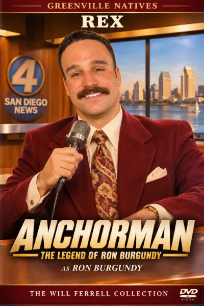
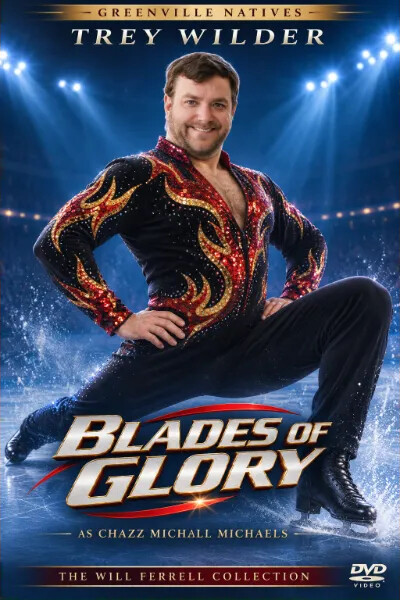
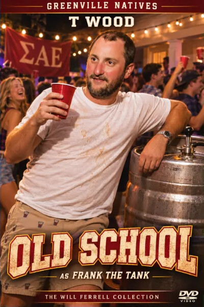
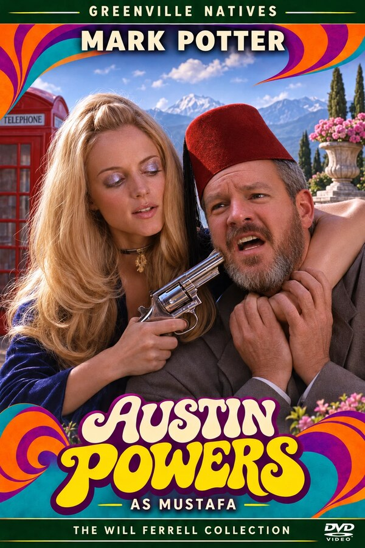
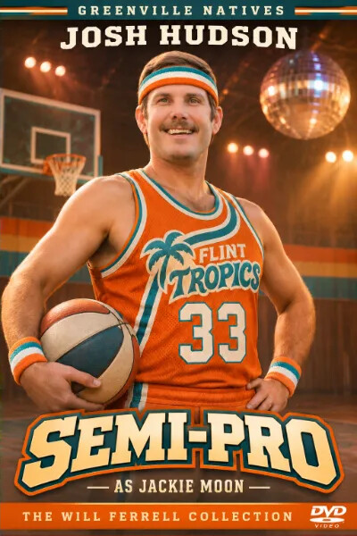
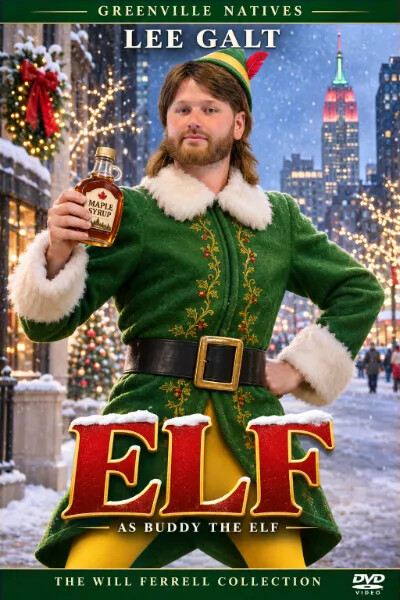
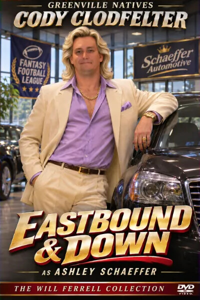
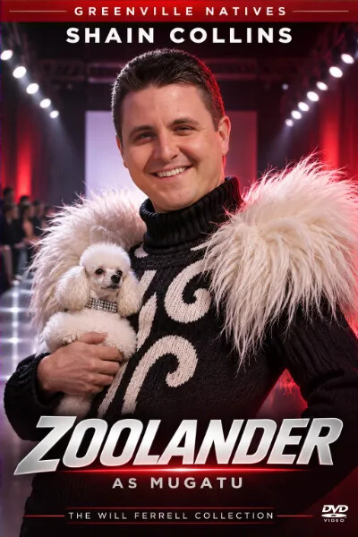
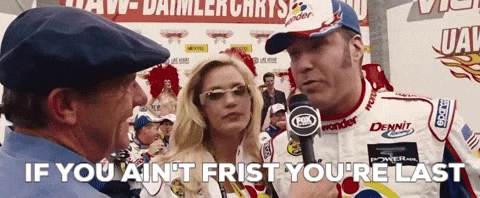

Nine weeks into the Greenville Natives season, we’ve officially entered the Will Ferrell Cinematic Universe. Rex has the ego of Ron Burgundy and the roster to back it up, Trey keeps collecting victories like Chazz Michael Michaels collecting gold medals, and Potter is doing everything right only to watch somebody else get all the fucking glory.
Week 9 delivered the third-highest-scoring matchup in league history, another historically unfortunate loss for Potter, and a 61.5-point performance from E that probably should’ve been released directly to DVD.
With four weeks remaining in the regular season, we’re assigning every manager a Will Ferrell character. Some are leading men. Others are the reason certain movies never get a sequel.
Power rankings: the casting callTen managers, ten Will Ferrell characters, ranked by power score after Week 9.
#
Manager
Character
Move
Power score
Change
Record
PF
Power record
1
Rex
Ron Burgundy
–
89.8
+1.00
8–1
1,245.0
68–13
2
Trey Wilder
Chazz Michael Michaels
▲ 1
80.2
+0.57
8–1
1,005.0
46–35
3
T Wood
Frank the Tank
▼ 1
76.7
−3.36
6–3
1,023.3
43–38
4
Mark Potter
Brad Whitaker
–
74.8
−2.80
5–4
1,106.1
53–28
5
Josh Hudson
Jackie Moon
–
63.3
+2.79
4–5
935.9
36–45
6
Michael Waivers
Allen Gamble
–
62.4
+2.79
4–5
1,012.4
50–31
7
Lee Galt
Buddy the Elf
–
56.3
+3.37
3–6
912.9
35–46
8
Cody Clodfelter
Ashley Schaeffer
–
51.0
−1.68
3–6
851.8
29–52
9
Ian Baro
Steve Butabi
–
48.1
−4.15
3–6
824.2
25–56
10
Shain Collins
Mugatu
–
40.3
−0.55
1–8
826.9
20–61
Power score after Week 9. Move is the change in rank from Week 8.

1
Ron Burgundy
Rex
Anchorman: The Legend of Ron Burgundy (2004)
Record
8–1
Power score
89.8
Points for
1,245.0
Points against
903.5
Power record
68–13
Avg score
138.3
Rex doesn’t know how to put this, but he’s kind of a big deal. People know him. He’s very important. He has many leather-bound books, and his apartment smells of rich mahogany.
At least that’s how Ron Burgundy would introduce the man currently terrorizing the Greenville Natives.
Rex demolished Potter 172.5–143.5 behind KWKenneth Walker’s two touchdowns, CWChristian Watson’s 171 receiving yards, and BBBrock Bowers’ 111 yards and a touchdown. The two combined for 316.0 points, the third-highest-scoring regular-season matchup in league history, just 8.8 points shy of the record. Rex’s individual performance ranks 13th all-time and was the second-highest of his career, falling just 2.5 points short of the 175.0 he scored against Potter in Week 6 of 2025. Apparently, Rex saves his two most important broadcasts for the days Potter happens to be watching.
Even more impressive is the historical pace. Rex is averaging 138.3 points per game, nearly ten points higher than Wood’s all-time single-season record of 128.7 set in 2018. He’s already finished as the league’s weekly high scorer four times, just two shy of Trey’s single-season record of six from 2010, and his 68-13 power record is approaching complete absurdity.
Ron Burgundy believed San Diego was lucky to have him. Rex probably feels the same way about Greenville Natives, and unfortunately, the numbers are making it difficult to tell him otherwise. Next week brings the Annual Taylor Bowl against Wood, the very man whose scoring-average record Rex is threatening to destroy. Somebody might want to keep Burgundy away from the scotch if that broadcast doesn’t go according to plan.

2
Chazz Michael Michaels
Trey Wilder
Blades of Glory (2007) · ▲ up 1
Record
8–1
Power score
80.2
Points for
1,005.0
Points against
820.5
Power record
46–35
Avg score
111.7
Chazz Michael Michaels was an arrogant, hard-drinking figure skater who somehow kept winning competitions despite having the personal discipline of a seventeen-year-old on spring break. His performances weren’t always technically impressive, but the man knew how to finish on the podium and celebrate like he’d personally invented ice skating.
Trey defeated Clod 103.3–69.2 to improve to 8-1, with MGMatthew Golden catching ten passes for 164 yards and a touchdown and JCJames Cook rushing for 107 yards. The win moved Trey back up to No. 2 in the official power rankings, although beating a defending champion in the middle of a collapse wasn’t exactly Olympic-level competition.
The difference between Trey and Rex is becoming impossible to ignore. Rex has scored 1,245 points, Trey has managed 1,005, and both are 8-1. Trey’s 46-35 power record suggests a team that’s been good enough to beat most opponents roughly half the time, yet he’s somehow collected eight victories while facing the fewest points in the league. Chazz would probably respond to this statistical criticism by taking off his shirt, grabbing a bottle of liquor, and informing everyone that mathematics is for pussies.
The bigger concern is LJLamar Jackson, whose thumb injury required surgery and landed him on injured reserve. He’s expected to miss at least six weeks and may not return until the NFL postseason, leaving Trey without his original starting quarterback for potentially the rest of the fantasy season. JLJeremiyah Love remains unavailable as well, forcing the offense to improvise at the worst possible time.
Another victory against Galt would put Trey at 9-1 and strengthen his playoff position, but eventually Chazz is going to have to perform against somebody who can actually stay upright on the ice.

3
Frank the Tank
T Wood
Old School (2003) · ▼ down 1
Record
6–3
Power score
76.7
Points for
1,023.3
Points against
926.3
Power record
43–38
Avg score
113.7
Frank Ricard started Old School as a respectable married man before discovering that his true calling involved drinking enormous quantities of alcohol and running naked through the neighborhood. The transformation was spectacular, embarrassing, and ultimately unsustainable.
Wood’s season is beginning to resemble the morning after.
After opening 5-0, Wood has lost three of his last four, including Sunday’s 120.8–102.6 defeat against Waivers. DSD’Andre Swift went from scoring three rushing touchdowns in Week 8 to managing just 3.1 fantasy points, while JGJahmyr Gibbs and TKTucker Kraft failed to provide their expected production. LBLuther Burden caught seven passes for 97 yards and a touchdown but suffered a concussion, and PMPatrick Mahomes’ elbow sprain created another concern despite an encouraging MRI.
Wood dropped from second to third in the power rankings, and his 43-38 power record is much less impressive than his actual 6-3 record. The funny part is that he still owns the league’s scoring-average record from 2018. Apparently, Frank the Tank was a hell of a lot better at football back then.
And much like Frank’s famous streaking scene, Wood appears to have taken off running under the impression that everybody else was following him, only to turn around and discover he’s completely alone. The rest of the league has apparently gone home, and Rex is waiting down the street with a camera.
The Taylor Bowl is next, and Rex isn’t only coming for the win. He’s coming for the record and the title of best Taylor. Losing a fantasy matchup is one thing. Losing your fucking identity is another.

4
Brad Whitaker
Mark Potter
Daddy's Home (2015)
Record
5–4
Power score
74.8
Points for
1,106.1
Points against
1,061.9
Power record
53–28
Avg score
122.9
Brad Whitaker did everything a good stepfather was supposed to do. He provided for the family, showed up every day, and genuinely cared about the kids. Unfortunately, Mark Wahlberg kept showing up on a motorcycle, taking his shirt off, and making Brad look like a complete asshole without lifting a finger.
Potter has spent nine weeks playing the role of Brad, assembling one of the best teams in the league while everybody else somehow gets the glory. JBJoe Burrow threw for 271 yards and three touchdowns, BIBucky Irving scored twice, and PNPuka Nacua caught 14 passes for 150 yards and a touchdown. Potter produced another excellent offensive performance and still walked away with absolutely nothing.
His 53-28 power record is the second-best in the league, yet he’s sitting at 5-4 because opponents have scored an absurd 1,061.9 points against him. That’s the most anyone has faced this season. If Brad Whitaker had Potter’s luck, he’d spend three months building the perfect treehouse only for Mark Wahlberg to arrive, casually do a backflip off the roof, and have the children immediately declare him their new favorite parent.
Now the situation is getting worse. Nacua suffered knee ligament sprains and turf toe on the Rams’ final offensive play and could miss several weeks, while RSRhamondre Stevenson is also dealing with a knee injury. Potter is facing the possibility of losing important pieces of his offense just as the championship playoff race becomes serious.
Brad eventually earned his family’s respect, but Potter’s next opponent is E, a team averaging just 91.6 points. Beating E would be the fantasy equivalent of Brad finally getting his stepchildren to call him Dad. It’s nice, but nobody’s throwing you a fucking parade.

5
Jackie Moon
Josh Hudson
Semi-Pro (2008)
Record
4–5
Power score
63.3
Points for
935.9
Points against
999.3
Power record
36–45
Avg score
104.0
Jackie Moon was the owner, coach, player, and chief entertainer of the Flint Tropics, a basketball franchise that spent more time dreaming up ridiculous halftime promotions than figuring out how to win games. Josh Hudson has apparently been operating a similar organization, where optimism and questionable management occasionally combine to produce something resembling success.
Hud defeated Shain 105.4–93.6 behind JCJa’Marr Chase’s ten receptions for 155 yards and a touchdown, while DPDak Prescott delivered a respectable performance in Dallas’ victory over Indianapolis.
Hud remains fifth in the official power rankings despite his 36-45 power record, and at 4-5, he’s still hanging around the championship playoff conversation. Jackie Moon would probably see that as an opportunity to announce that the Flint Tropics are about to become the greatest team in basketball history, then immediately schedule a halftime performance involving a trampoline, three cheerleaders, and a live mountain lion.
Hud is now just one victory away from his 100th career win, counting regular-season and playoff games. Jackie Moon would absolutely turn that milestone into a weeklong promotional event, complete with commemorative T-shirts, fireworks, and a guaranteed sellout at the Flint Tropics arena. Whether Josh actually gets No. 100 against Cody is another question, but at least there’s finally something legitimate worth celebrating.
6
Allen Gamble
Michael Waivers
The Other Guys (2010)
Record
4–5
Power score
62.4
Points for
1,012.4
Points against
1,012.1
Power record
50–31
Avg score
112.5
Allen Gamble was a mild-mannered forensic accountant who preferred paperwork and quiet afternoons until everyone discovered his bizarre past as Gator, a man with considerably more experience operating in the criminal underworld than anybody expected.
Nobody in this league saw Waivers as a threat after he opened 1-4, which is exactly how Gator likes it. He’s won three of four since, most recently beating Wood 120.8–102.6. CLCeeDee Lamb led the NFL with 195 receiving yards on ten catches, CMChristian McCaffrey continued producing in the backfield, and RORome Odunze provided additional support. Waivers didn’t need JAJosh Allen to have a spectacular afternoon because the rest of the offense was finally doing its fucking job.
What makes his situation interesting is the 50-31 power record, better than those of Trey and Wood despite his losing actual record. He’s been one of the five highest-scoring teams six times this season, but those performances haven’t translated into enough actual victories.
And there’s a potentially infuriating ending developing here. If Waivers misses the playoffs by one game, knowing there was an entirely avoidable victory earlier in the season that could’ve put him over the top, it’s going to be an all-time kick in the balls. Gator might be making a comeback, but he’s also running out of time to fix the damage his earlier decisions caused.
Next week brings Shain, giving Waivers an opportunity to reach .500 and put himself directly into the battle for the fourth playoff spot.

7
Buddy the Elf
Lee Galt
Elf (2003)
Record
3–6
Power score
56.3
Points for
912.9
Points against
985.0
Power record
35–46
Avg score
101.4
Buddy the Elf arrived in New York City convinced that everything was wonderful, everybody was his friend, and there was absolutely no reason to question his understanding of the world. He was a grown man behaving like a child who’d consumed approximately six pounds of sugar and discovered the concept of traffic for the first time.
Galt finally found somebody willing to participate in his version of reality, defeating E 110.5–61.5. BPBrock Purdy threw for 232 yards and two touchdowns, JCJonah Coleman contributed in the backfield, and the Bears defense helped offset a zero from AMAdonai Mitchell despite seven targets. Lee scored enough to finish in the top half of the league while his opponent managed the lowest total of the week.
The victory improved Lee to 3-6, although his 35-46 power record suggests he hasn’t exactly been dominating the competition. His season has also been unusually frustrating, with actual results falling short of what his weekly scoring comparisons would suggest.
Like Hud, Lee is sitting on 99 career victories, including the playoffs, making his next win the 100th of his Greenville Natives career. Buddy would probably celebrate with a parade through Manhattan, several gallons of maple syrup, and an entirely inappropriate number of hugs for strangers.
Unfortunately, Lee’s next opponent is Trey, who’s sitting at 8-1 despite an offense that hasn’t exactly been terrifying anybody. Reaching 100 wins by knocking off one of the league leaders would be a much better accomplishment than celebrating a 49-point victory over a team that barely remembered to score.

8
Ashley Schaeffer
Cody Clodfelter
Eastbound & Down (2009–2013)
Record
3–6
Power score
51.0
Points for
851.8
Points against
1,039.3
Power record
29–52
Avg score
94.6
Ashley Schaeffer was an obnoxiously wealthy BMW dealership owner with ridiculous white hair, an unhealthy obsession with Kenny Powers, and the confidence of a man who’d never been told to shut the fuck up. He spent his days showing off expensive German automobiles and convincing everybody that Ashley Schaeffer BMW was the finest establishment on the planet.
Cody is still walking around with last year’s championship trophy while his current franchise looks like a used-car lot full of flood-damaged vehicles.
The defending champion scored a pathetic 69.2 points against Trey, with JGJared Goff managing 5.3, MNMalik Nabers contributing just 6.8, and not a single offensive starter reaching double digits. The Bills defense somehow became his highest-scoring starter, which is the kind of thing that should prompt an immediate investigation into whether the dealership has been selling cars with the engines missing.
Cody’s 29-52 power record is third-worst in the league, and his 851.8 points scored are better than only E and Shain. He’s now 3-6 after winning the championship last season, a remarkable transformation from defending champion to a man who should probably be standing outside the dealership holding an inflatable tube man and begging somebody to come inside.
The championship trophy might still be sitting in Cody’s showroom, but the inventory has gone downhill considerably. Another loss against Hud could leave Ashley Schaeffer explaining to prospective customers that he used to operate a prestigious establishment before everything went to absolute shit.
9
Steve Butabi
Ian Baro
A Night at the Roxbury (1998)
Record
3–6
Power score
48.1
Points for
824.2
Points against
999.5
Power record
25–56
Avg score
91.6
Steve Butabi spent most of A Night at the Roxbury trying to get into exclusive nightclubs with his brother Doug, repeatedly getting rejected by bouncers who had absolutely no interest in letting two hopeless assholes through the front door.
E’s season has been one long night standing outside the velvet rope.
He scored 61.5 against Galt, the lowest total of Week 9 and his worst performance of the season. JTJonathan Taylor struggled, JJJustin Jefferson couldn’t get much going, and JJJosh Jacobs managed just 0.5 fantasy points after fracturing a finger early in Green Bay’s game against New England. Jacobs now requires surgery, with his return timeline uncertain, leaving E without another player he desperately needs to produce.
E ranks dead last in total points scored with 824.2 and owns a 25-56 power record. He’s averaging just 91.6 points per game, making him the least productive offense in the league. Even Shain has scored more points, which is the fantasy equivalent of watching Doug Butabi somehow get into the club while Steve gets turned away for wearing the wrong fucking shoes.
The worst part is that E has enough recognizable names on his roster to convince himself that a turnaround is coming. Unfortunately, Steve Butabi spent an entire movie convincing himself he was moments away from becoming a nightclub legend, and we all saw how that worked out. Potter awaits in Week 10, and E might want to stop practicing his head-bobbing dance long enough to figure out how his offense is supposed to score points.

10
Mugatu
Shain Collins
Zoolander (2001)
Record
1–8
Power score
40.3
Points for
826.9
Points against
996.1
Power record
20–61
Avg score
91.9
Jacobim Mugatu was a lunatic fashion designer with enormous confidence, ridiculous ideas, and a remarkable inability to understand why the rest of the world didn’t appreciate his genius. This was, after all, the man who invented the keyboard necktie, a fashion accessory that somehow combined the functionality of a computer keyboard with the timeless elegance of looking like a complete fucking idiot.
Shain has spent nine weeks producing the fantasy football equivalent of Mugatu’s latest collection: expensive, confusing, and completely fucking useless.
Shain lost 105.4–93.6 to Hud despite JWJavonte Williams rushing for 101 yards and providing one of the few respectable performances in the lineup. AJAshton Jeanty managed just 4.5 fantasy points, DKDalton Kincaid struggled, and Shain once again failed to reach 100. To make matters worse, MWMichael Wilson fractured a bone in his neck against Seattle and has been ruled out for the remainder of the season, another blow to an offense already averaging just 91.9 points per game.
At 1-8, Shain owns the league’s worst record and a 20-61 power record. He’s outscored the rest of the league in fewer than one-quarter of his possible weekly head-to-head comparisons. The historical achievement he’s currently chasing is considerably less prestigious than 100 career wins: avoiding the possibility of finishing with one of the worst records in Greenville Natives history.
Mugatu believed he was creating revolutionary fashion while everybody around him could plainly see that he’d lost his fucking mind. Shain has four weeks to create something resembling a competitive fantasy football team before his only remaining runway is the walk to the first tee carrying somebody else’s clubs.
And if the roster still can’t be saved, there’s always Mugatu’s backup plan: brainwash a male model and send him to kill the fucking Prime Minister of Malaysia.
Week 9 recap: final scores
Rex
172.5
Mark Potter
143.5
Dunked On · Slug Fest — 29.0 margin, 316.0 combined
Michael Waivers
120.8
T Wood
102.6
18.2 margin, 223.4 combined
Lee Galt
110.5
Ian Baro
61.5
Dunked On · Blow Out · Pillow Fight — 49.0 margin, 172.0 combined
Trey Wilder
103.3
Cody Clodfelter
69.2
Dunked On · Pillow Fight — 34.1 margin, 172.5 combined
Josh Hudson
105.4
Shain Collins
93.6
11.8 margin, 199.0 combined
Marks are computed from the scores: Buzzer Beater = margin < 1, Nail Biter = 1 < margin < 5, Dunked On = margin > 20, Blow Out = margin > 40, Slug Fest = combined > 250, Pillow Fight = combined < 180.
If you’re not first, you’re lastThe Ricky Bobby Award · Talladega Nights: The Ballad of Ricky Bobby (2006)
Week 9: Mark Potter
Potter put up 143.5 points against Rex in Week 9 and still lost by 29. He was the second-highest-scoring team in the entire league, but unfortunately drew the one opponent he couldn’t beat. Against any of the other eight managers, Potter would’ve walked away with a victory.
As Ricky Bobby’s daddy famously taught him, "If you ain’t first, you’re last."
The Ricky Bobby Award recognizes the special kind of fantasy football bullshit where the second-highest scorer faces the week’s highest scorer, making defeat unavoidable regardless of which other manager he could’ve played.

Talladega Nights: The Ballad of Ricky Bobby (2006)
All-time Ricky Bobby Award winners
Manager
Awards
Trey Wilder
5
Rex
4
Mark Potter
3
Michael Waivers
3
Josh Hudson
2
T Wood
2
Ian Baro
2
Cody Clodfelter
2
Lee Galt
1
Shain Collins
1
Zack Bullock
1
Total
26
Potter’s first two awards came in consecutive weeks to open the 2024 season, courtesy of Shain and Rex. Now Rex has personally delivered another one, making him responsible for two-thirds of Potter’s career Ricky Bobby Awards.
If this keeps happening, we’ll have to rename the fucking thing after Potter. He went 15 seasons without winning one, then collected three in barely two years.
Week 10 previewFour weeks remain. Four championship playoff spots. Two Caddy Bowl participants.
Main Event — The Annual Taylor Bowl
Rex
8–1 · PF 1,245.0 · PA 903.5
VS
T Wood
6–3 · PF 1,023.3 · PA 926.3
Ron Burgundy vs. Frank the Tank
Forget the standings. This is the Annual Taylor Bowl, where two grown men named Taylor compete for the right to be called Taylor 1, the Best Taylor, or the Taller Taylor until their next meeting.
Rex leads the series 16-14, but Wood owns the playoff edge at 3-2 and won the most recent meeting. Rex has the better record and the stronger offense, and he’s chasing Wood’s scoring-average record on top of it. A Rex win strengthens his grip on first place; a Wood win improves his playoff position and gives him another year’s worth of material to be an insufferable asshole.
Two Taylors enter. One leaves as Taylor 1. The other is just Taylor 2.
Head-to-head · the history
(16–14)Overall Record(14–16)
(14–11)Regular Season Record(11–14)
(2–3)Playoff Record(3–2)
3,901.4H2H Points Scored3,817.9
130.0H2H PPG127.3
113.7H2H PPG (Regular Season)106.7
+83.5Point Differential−83.5
0Current Win Streak1
4Longest Win Streak3
57.1Biggest Win Margin74.3
Matchup marks · the margins
0Buzzer Beater0
5Nail Biter3
3Dunked On3
3Blow Out1
2Slug Fest0
3Pillow Fight1
Trey (8-1) vs. Galt (3-6)
Trey Wilder
8–1 · PF 1,005.0 · PA 820.5
VS
Lee Galt
3–6 · PF 912.9 · PA 985.0
Chazz Michael Michaels vs. Buddy the Elf
Trey is trying to keep pace with Rex while Lee desperately needs a win to stay in the playoff conversation. Trey owns the regular-season series and carries a three-game win streak over Galt into this one, but Galt is a perfect 2-0 against him in the playoffs.
A Galt victory would also be his 100th career win, giving Buddy the Elf a legitimate reason to celebrate something other than Christmas.
Head-to-head · the history
(12–11)Overall Record(11–12)
(12–9)Regular Season Record(9–12)
(0–2)Playoff Record(2–0)
2,702.1H2H Points Scored2,655.1
117.5H2H PPG115.4
108.5H2H PPG (Regular Season)102.0
+47.0Point Differential−47.0
3Current Win Streak0
3Longest Win Streak3
133.0Biggest Win Margin33.4
Matchup marks · the margins
0Buzzer Beater0
0Nail Biter1
2Dunked On3
1Blow Out0
2Slug Fest0
2Pillow Fight2
Potter (5-4) vs. E (3-6)
Mark Potter
5–4 · PF 1,106.1 · PA 1,061.9
VS
Ian Baro
3–6 · PF 824.2 · PA 999.5
Brad Whitaker vs. Steve Butabi
Potter has the league’s second-best power record but only five actual wins, while E has scored fewer points than anybody else. E still leads the all-time series 11-9, but Potter has won four straight against him.
Brad Whitaker has finally found somebody less impressive than Mark Wahlberg, and if he can’t beat Steve Butabi, he might as well surrender custody of the fucking children.
Head-to-head · the history
(9–11)Overall Record(11–9)
(8–9)Regular Season Record(9–8)
(1–2)Playoff Record(2–1)
2,545.7H2H Points Scored2,590.9
127.3H2H PPG129.5
112.1H2H PPG (Regular Season)113.3
−45.2Point Differential+45.2
4Current Win Streak0
4Longest Win Streak8
46.1Biggest Win Margin45.4
Matchup marks · the margins
0Buzzer Beater1
1Nail Biter0
3Dunked On3
1Blow Out2
0Slug Fest2
0Pillow Fight0
Waivers (4-5) vs. Shain (1-8)
Michael Waivers
4–5 · PF 1,012.4 · PA 1,012.1
VS
Shain Collins
1–8 · PF 826.9 · PA 996.1
Allen Gamble vs. Mugatu
Waivers can reach .500 after starting 1-4, while Shain desperately needs a win to avoid sinking deeper toward the Caddy Bowl. Waivers leads the all-time series 15-10 and has won three straight against him, though Shain has never been easy to put away in the playoffs, where they’re split 1-1.
Gator has an excellent opportunity to continue his playoff push against a man whose season has been one continuous fashion disaster.
Head-to-head · the history
(15–10)Overall Record(10–15)
(14–9)Regular Season Record(9–14)
(1–1)Playoff Record(1–1)
2,903.9H2H Points Scored2,861.8
116.2H2H PPG114.5
107.6H2H PPG (Regular Season)103.6
+42.1Point Differential−42.1
3Current Win Streak0
5Longest Win Streak3
50.2Biggest Win Margin56.4
Matchup marks · the margins
0Buzzer Beater0
0Nail Biter1
6Dunked On5
2Blow Out2
2Slug Fest0
3Pillow Fight3
Hud (4-5) vs. Clod (3-6)
Josh Hudson
4–5 · PF 935.9 · PA 999.3
VS
Cody Clodfelter
3–6 · PF 851.8 · PA 1,039.3
Jackie Moon vs. Ashley Schaeffer
Hud needs a win to stay within reach of the fourth playoff spot, while Cody needs to stop his title defense from becoming a Caddy Bowl campaign. Cody leads the series 11-6 and beat Hud in last year’s championship game, which is exactly why No. 100 would taste so good.
The defending champion’s showroom has been looking more like a liquidation sale with each passing week.
Head-to-head · the history
(6–11)Overall Record(11–6)
(6–10)Regular Season Record(10–6)
(0–1)Playoff Record(1–0)
1,920.0H2H Points Scored1,982.3
112.9H2H PPG116.6
106.7H2H PPG (Regular Season)108.1
−62.3Point Differential+62.3
1Current Win Streak0
2Longest Win Streak3
36.8Biggest Win Margin74.7
Matchup marks · the margins
0Buzzer Beater0
0Nail Biter0
3Dunked On4
1Blow Out0
0Slug Fest2
0Pillow Fight4
Marks are the counts listed in WriteupStats, credited to the winning side. Biggest Win Margin is the workbook’s Max Point Dif row. Records and totals include playoff meetings unless a row says Regular Season.